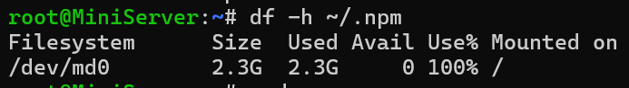

最近一直在持续微调 Hexo 的主题外观，免不了经常上官网查阅文档。今天偶然发现官方的最新版本号已经是 7.3，而我黑群晖上的 Hexo 还停留在 6.3。
ENOSPC 问题
版本落后其实并不影响使用，反正 deploy 到服务器上都只是静态文件而已，若是折木奉太郎那样的节能主义者，以下各种奇怪问题都将不会发生。奈何自己有强迫症，不升级到最新版本尝尝鲜就手痒头麻浑身躁动。SSH 连上黑群晖，npm update 给他来个全面升级，岂不美哉？然而结果并不顺利……
1 2 3 4 5 6 7 8 root@MiniServer:~# npm update npm error code ENOSPC npm error syscall write npm error errno -28 npm error nospc ENOSPC: no space left on device, write npm error nospc There appears to be insufficient space on your system to finish. npm error nospc Clear up some disk space and try again. npm error A complete log of this run can be found in: /root/.npm/_logs/2024-08-04T18_51_14_670Z-debug-0.log
貌似是说设备没空间了，用 df -h 看看磁盘占用状况：
执行命令后的结果
/dev/md0 就是群晖的系统分区，该分区储存了群晖系统基础数据，它满了就相当于 Windows 系统盘满了，难怪什么命令都歇菜。
解决办法
这里参考了以下两处：
使用 du -sh /* 指令查看根目录（根目录就是系统目录 ）下的各个一级文件夹大小：
1 2 3 4 5 6 7 8 9 10 ... 395M /root 23M /run 0 /sbin 0 /syno_etcd_client:2379 0 /sys 760K /tmp 1.6G /usr 186M /var 5.9M /var.defaults
发现最大的文件夹是 /usr，顺藤摸瓜下去，里面最大的单个文件是 /usr/syno/synoinstall/space-preserve，479M。如果是一般文件，可以使用 rm -rf 命令将其删除，但这里感觉是系统文件，不敢造次。
继续尝试，使用命令 sudo du -ch --exclude=./dev --exclude=./run --exclude=./sys --exclude=./tmp --exclude=./volume1 --exclude=./volume2 --exclude=./proc | sort -h | tail -50，把系统文件夹和挂载的硬盘排除在外，按照文件夹大小列出其他文件夹：
1 2 3 4 5 6 7 8 9 10 11 12 13 14 15 16 17 18 19 20 21 22 23 24 25 26 27 28 29 30 31 32 33 34 35 36 37 38 39 40 41 42 43 44 45 46 47 48 49 50 35M ./usr/local/packages/@appstore/Python2/usr 35M ./usr/local/packages/@appstore/Python2/usr/local 35M ./usr/local/packages/@appstore/Python2/usr/local/lib 35M ./usr/local/packages/@appstore/SynoFinder 40M ./usr/local/packages/@appstore/SMBService/usr 40M ./usr/syno/synoman/webman/texts 42M ./usr/share/geoip 42M ./var/log 43M ./usr/syno/synoman/webman/modules 44M ./usr/local/packages/@appstore/SMBService 52M ./root/.cache/node-gyp/18.12.0/include/node/openssl/archs 52M ./root/.node-gyp/18.12.0/include/node/openssl/archs 53M ./root/.cache/node-gyp/18.12.0/include/node/openssl 53M ./root/.node-gyp/18.12.0/include/node/openssl 53M ./root/.node-gyp/18.18.2/include/node/openssl/archs 54M ./root/.cache/node-gyp 54M ./root/.cache/node-gyp/18.12.0 54M ./root/.cache/node-gyp/18.12.0/include 54M ./root/.cache/node-gyp/18.12.0/include/node 54M ./root/.node-gyp/18.12.0 54M ./root/.node-gyp/18.12.0/include 54M ./root/.node-gyp/18.12.0/include/node 54M ./root/.node-gyp/18.18.2/include/node/openssl 56M ./root/.node-gyp/18.18.2 56M ./root/.node-gyp/18.18.2/include 56M ./root/.node-gyp/18.18.2/include/node 57M ./root/.cache 61M ./usr/lib/python3.8 80M ./var/db/geoip-database 83M ./var/db 105M ./usr/bin 109M ./root/.node-gyp 128M ./usr/syno/synoman/webman 129M ./usr/share 170M ./usr/syno/synoman 186M ./var 205M ./usr/local/packages/@appstore 206M ./usr/local/packages 208M ./root/.npm/_cacache/content-v2 208M ./root/.npm/_cacache/content-v2/sha512 227M ./root/.npm 227M ./root/.npm/_cacache 256M ./usr/local 308M ./usr/lib 395M ./root 497M ./usr/syno/synoinstall 719M ./usr/syno 1.6G ./usr 2.2G . 2.2G total
发现套件、Python 以及 node.js 都装在系统盘里，难怪不妙。但这些也不敢轻动，不如先把带 cache 的删除了再说：
1 2 3 rm -rf ./root/.cache/ rm -rf ./root/.npm/_cacache rm -rf ./var/.tmp/
之后再用 df -h 查看系统分区占用，已经成功降到 1.9G，占用率 87%，虽然依然不太健康，但好歹可以正常运行了。
预防措施：Hexo 转移至 Docker
Hexo 原来是直接安装的，在这次清理空间时，我发现林林总总的 npm 下载的模块占用了不少空间——不要觉得模块文件不大就没关系，群晖的系统分区就区区 2.3G，npm 的模块数量又多，轻轻松松占据上百M。为了长治久安，决定装个 Docker 把 Hexo 圈养在内。
怎么用 Docker 装 Hexo 的教程很多，可以自行搜索。
{kind=link}